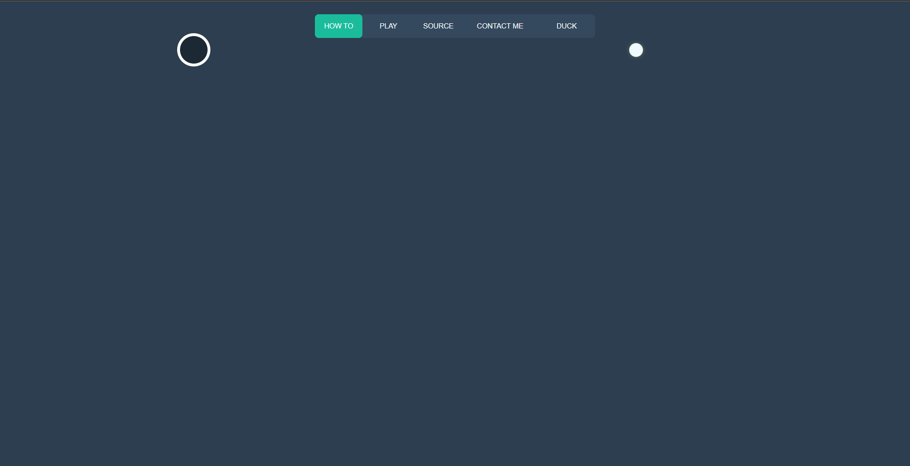

Obiectivul mini-jocului este de a introduce bila in interiorul gauri de pe ecran.
In primul rand pentru a juca trebuie sa apesi pe butonul PLAY.
Pe ecran va aparea bila si gaura in care trebuie sa intre. dand clic pe bila va incepe selectia traiectoriei. apasati clic odata ce sunteti satisfacut cu traiectoria aleasa.
